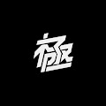
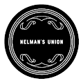

KingMantaRaySwap KingMantaRaySwap 由 PancakeSwap 和 Yield Farming 分叉，以及在 BSC POLYGON AVAX Fantom 上运行的 Staking 平台。KingMantaRaySwap 由 PancakeSwap 和 Yield Farming 分叉，以及在 BSC POLYGON AVAXFantom 上运行的 Staking 平台KingManta
KingSpeed Kingspeed 是一款基于区块链的免费游戏和赚取收入的赛车游戏，玩家使用 NFT 赛车和设备在他们创造的巨大且不断扩大的赛车世界中挑战其他玩家。在 Kingspeed 中，用户可以收
KingToken KGT King Token (KGT) 是托管在 Tron 区块链上的与 TRC20 兼容的加密代币。它是第一个通货紧缩和可开采的代币，通过股权证明 (POS) 采矿，您可以简单地抵押您的 KGT 并让它们自动增长。
KinkySol KinkySol 是采用 NSFW NFT 艺术的 Solana 区块链项目。 5 月 20 日正式上线。让用户记住他们的扭结、欲望和欲望。在铸造时，KinkySol 是用内衣或性感服装创建的。头部
Kitten.Finance Kitten.Finance 是一个完整的 DeFi 生态系统：交换、借贷、期权、保险库等等。我们也在研究我们自己的 L2 解决方案。Kitten.finance 是一个 DeFi 生态系统，拥有
Kitty Farms Kitty Farms 是 BSC 上用于单产农业的去中心化解决方案，具有额外的机制来保护用户免受风险，因此您不必为高盈利能力而付出高昂的风险。用户将通过参与 KittySwap 上的流动
Kitty Inu 镇上有一只新的狗狗。 Kitty 是一种游戏和 NFT DeFi 协议，为 Play-to-Earn 和 Metaverse 生态系统提供动力。Kitty 的使命是建立最好的社区驱动的游戏和 NFT Defi 协议，并由 Defi 中最好的团
 KIWAMI Genesis Kiwami 是一个包含 10,000 个化身的集合，适用于下一代艺术家、建设者和打破规则者的集体。精心设计的元节 &出生在日本的持有者可以获得独家的 Kiwami 产品，并
KIWI Wallet KIWI 钱包使用户能够在链下和链上进行快速、免费和私密的小额支付。 KIWI PoW 代币是一个社区项目，也是首批可开采的 ERC20/918 代币之一。没有预挖或 ICO。因此，它具
Kiyomi Finance POKI 最大供应量 80,00010% 转让税：1% 燃烧4% 用于农业POKICR 质押 5% 通货紧缩农业循环：耕种、转移、烧毁、再分配可变排放：农场收到的 POKI 总数除以 360000 块 基桥
Klandestino Swap 什么是 Klandestino Protocole？ (KlandestinoSwap) Klandestino Swap 是一个去中心化的“DEX”交易所，用于交换币安链网络上推出的 BEP-20 代币。这是一个允许交易者、开发商和流动性提供
KlayMint KlaymMint 是一个 NFT 开放平台，提供基于 Klaytn 链的 NFT 铸币（销售）/购买/投资/交易服务。 在 KlayMint 中使用 NFT 铸币服务时，您可以选择“稀有度（等级）”选项，项目/公司
KLAYswap KLAYswap 是一个完整的链上即时交换协议，与链上流动性池一起运行，流动性由自动做市 (AMM) 机制保证。它是一种链上交换服务，允许任何拥有任何 KLAY 或 KCT 类型的代币加
KLAYTN PUNKS HE KLAYTN PUNKS是 ECO 友好型 Klaytn 区块链上 10,000 个算法生成的朋克的独特收藏集合！该系列中的每个朋克都是..THE KLAYTN PUNKS 是 10,000 种算法生成的独特主题朋克，采用定
Klever Bank 获得 1.7% 或 2.7% / 天！KleverBank 根据您的储蓄每天自动生成 1.7% 和 2.7% 的利息。您可以每天提取和再投资。当您再投资时，总投资将增加，您将获得更多收
KlimaDao 使用由真实碳资产支持的数字货币 KLIMA 对抗气候变化并获得奖励。KlimaDAO 是新绿色经济的中心。 KlimaDAO 建立在节能的 Polygon 网络之上，使用一系列技术来减少市
Knights & Peasants 骑士与Peasants 是一款建立在 Harmony 区块链上的中世纪主题 RPG 放置类游戏。它支持一系列功能，例如：单一抵押（银行）、市场、收益农场、托管服务，当
Knights of the Round Table DeFi Knights DeFi 正在为币安智能链上的 DeFi 设定新标准。 我们相信，通过社区、荣誉和诚信，我们可以改变未来其他人处理 DeFi 的方式。 我们的目标如下：我们想要什么：对重
Lion Farming Lion Farming，基于 Polygon 的上一代单产农业 注册办公室地址于 2022 年 6 月 14 日从 Ffynnonddofn 74 High Street Fishguard Pembrokeshire SA65 9AU 更改为 16 Main Street Fishguard Pembrokeshire SA65 9HJ在南非，非洲狮（Panther
Naughty Teddies Club OfficiaI 世界上第一个也是最大的加密收藏品和不可替代代币 (NFT) 的数字市场。购买、出售和发现独家数字商品收藏中最时尚的玩具俱乐部…… Twitter Economy NFT 是可收藏的 NFT。
 Nelman's Union Nelman’s Union是 1,000 个 Nelman NFT 的集合——以太坊区块链中的独特数字收藏品。您的 Nelman 不仅是独一无二的…Nelman’s Union
NFT Guild Friends 过去 7 天没有出售 NFT 公会好友。 此收藏中的 NFT 将免费提供给 NFT 公会收藏通行证（骷髅）持有者。 然后他们可以决定持有、赠送或出售它们。 NFT 公会朋友 NFT - 常见
NFTv by our couch 在过去的 7 天里，我们的沙发上没有出售 NFTv。 4,444 台使用过的电视生活在以太坊区块链上。 NFTv 适用于所有沙发模因持有者。拥有数字舒适套装以获得所有未
notBanksyWindow 过去 7 天内没有售出 notBanksyWindow。 阶段 #3 售罄！这是第 4 阶段 notBanksyWindow MINT： notBanksyWindow Mint 网站（0.005ETH） notBanksyStencils 操作系统// notBanksyAzuki 操作系统/
notGrifters 类型 凿击：38% 阴暗：26.2% 坏人：12% 火焰：23.3% 资产类型 版次：99.5% 传奇版：0.5% notGrifters NFT - 常见问题（FAQ） ▶ 什么是 notG
Obsession2020 欢迎来到 OpenSea 上的 Obsession2020 主页。 发现这个系列中最好的项目。Obsession2020 NFT - 常见问题（FAQ） 过去 7 天没有售出 Obsession2020。
OmniOwls (eth) 2,000 只猫头鹰在 @LayerZero_Labs 协议上大喊大叫🦉 (eth)https://opensea.io/collection/omniowlspoly 神圣的HOOT！ 我们已经正式出炉了！ 我们正在连接我们的链条并揭示 WEN ??? 非常非常快！ 随意在这里抓猫头鹰（虽然我们


 是一种兼容 TRC20 的 Crypto T")


 上经过验证的智能合约一起使用")


https://opensea.io/collection/omniowlspoly")